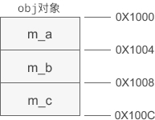
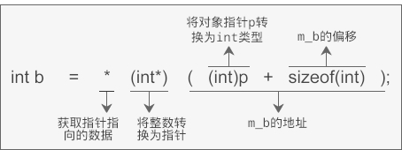

借助指针突破访问权限的限制，访问private、protected属性的成员变量
我们都知道，C++ 不允许通过对象来访问 private、protected 属性的成员变量，例如：
这段代码说明了，无论通过对象变量还是对象指针，都不能访问 private 属性的成员变量。
不过 C++ 的这种限制仅仅是语法层面的，通过某种“蹩脚”的方法，我们能够突破访问权限的限制，访问到 private、protected 属性的成员变量，赋予我们这种“特异功能”的，正是强大而又灵活的指针（Pointer）。
图中假设 obj 对象的起始地址为 0X1000，m_a、m_b、m_c 与对象开头分别相距 0、4、8 个字节，我们将这段距离称为偏移（Offset）。一旦知道了对象的起始地址，再加上偏移就能够求得成员变量的地址，知道了成员变量的地址和类型，也就能够轻而易举地知道它的值。
当通过对象指针访问成员变量时，编译器实际上也是使用这种方式来取得它的值。为了说明问题，我们不妨将上例中成员变量的访问权限改为 public，再来执行第 18 行的语句：
如果通过 p 指针访问 m_a：
修改上例中的代码，借助偏移来访问 private 属性的成员变量：
运行结果：
a1=10, a2=40, b=20, c=60
前面我们说 C++ 的成员访问权限仅仅是语法层面上的，是指访问权限仅对取成员运算符
本节的目的不是为了访问到 private、protected 属性的成员变量，这种“花拳绣腿”没有什么现实的意义，本节主要是让大家明白编译器内部的工作原理，以及指针的灵活运用。
- #include <iostream>
- using namespace std;
- class A{
- public:
- A(int a, int b, int c);
- private:
- int m_a;
- int m_b;
- int m_c;
- };
- A::A(int a, int b, int c): m_a(a), m_b(b), m_c(c){ }
- int main(){
- A obj(10, 20, 30);
- int a = obj.m_a; //Compile Error
- A *p = new A(40, 50, 60);
- int b = p->m_b; //Compile Error
- return 0;
- }
不过 C++ 的这种限制仅仅是语法层面的，通过某种“蹩脚”的方法，我们能够突破访问权限的限制，访问到 private、protected 属性的成员变量，赋予我们这种“特异功能”的，正是强大而又灵活的指针（Pointer）。
使用偏移
在对象的内存模型中，成员变量和对象的开头位置会有一定的距离。以上面的 obj 为例，它的内存模型为：

图中假设 obj 对象的起始地址为 0X1000，m_a、m_b、m_c 与对象开头分别相距 0、4、8 个字节，我们将这段距离称为偏移（Offset）。一旦知道了对象的起始地址，再加上偏移就能够求得成员变量的地址，知道了成员变量的地址和类型，也就能够轻而易举地知道它的值。
当通过对象指针访问成员变量时，编译器实际上也是使用这种方式来取得它的值。为了说明问题，我们不妨将上例中成员变量的访问权限改为 public，再来执行第 18 行的语句：
int b = p->m_b;
此时编译器内部会发生类似下面的转换：int b = *(int*)( (int)p + sizeof(int) );
p 是对象 obj 的指针，(int)p将指针转换为一个整数，这样才能进行加法运算；sizeof(int)用来计算 m_b 的偏移；(int)p + sizeof(int)得到的就是 m_b 的地址，不过因为此时是int类型，所以还需要强制转换为int *类型；开头的*用来获取地址上的数据。

如果通过 p 指针访问 m_a：
int a = p -> m_a;
那么将被转换为下面的形式：int a = * (int*) ( (int)p + 0 );
经过简化以后为：int a = *(int*)p;
突破访问权限的限制
上述的转换过程是编译器自动完成的，当成员变量的访问权限为 private 时，我们也可以手动转换，只要能正确计算偏移即可，这样就突破了访问权限的限制。修改上例中的代码，借助偏移来访问 private 属性的成员变量：
- #include <iostream>
- using namespace std;
- class A{
- public:
- A(int a, int b, int c);
- private:
- int m_a;
- int m_b;
- int m_c;
- };
- A::A(int a, int b, int c): m_a(a), m_b(b), m_c(c){ }
- int main(){
- A obj(10, 20, 30);
- int a1 = *(int*)&obj;
- int b = *(int*)( (int)&obj + sizeof(int) );
- A *p = new A(40, 50, 60);
- int a2 = *(int*)p;
- int c = *(int*)( (int)p + sizeof(int)*2 );
- cout<<"a1="<<a1<<", a2="<<a2<<", b="<<b<<", c="<<c<<endl;
- return 0;
- }
a1=10, a2=40, b=20, c=60
前面我们说 C++ 的成员访问权限仅仅是语法层面上的，是指访问权限仅对取成员运算符
.和->起作用，而无法防止直接通过指针来访问。你可以认为这是指针的强大，也可以认为是 C++ 语言设计的瑕疵。本节的目的不是为了访问到 private、protected 属性的成员变量，这种“花拳绣腿”没有什么现实的意义，本节主要是让大家明白编译器内部的工作原理，以及指针的灵活运用。
关注微信公众号「站长严长生」，在手机上阅读所有教程，随时随地都能学习。本公众号由C语言中文网站长运营，每日更新，坚持原创，敢说真话，凡事有态度。

微信扫描二维码关注公众号